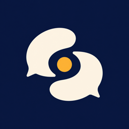

这是旧版绿色方案的虚构演示，已不代表当前小程序。查看新版首页视觉稿；两者都不是微信扫码体验版。

成子关系决策智能体 看懂关系，清醒选择聊天副驾 · 从这里开始
只处理你主动上传的截图，不会读取微信聊天。
这句话，怎么回？
发张聊天截图，先看清，再决定。
看原话找依据给回复
判断依据 原话优先 · 文献辅助
76,735汉字
46份参考资料
看看参考了什么 ↓
《亲密关系》 · 投入与承诺
《非暴力沟通》 · 观察与请求
《成人依恋》 · 情绪与安全感
围绕一个人，继续聊
分析供你参考，决定始终由你来做。
聊天截图，怎么回？
选图 → 确认哪边是你 → 看建议
01 · 上传材料
先选一张截图
＋本预览使用虚构示例正式小程序会从相册选择 JPG / PNG
真实使用时必须先选择本人气泡位置，再确认材料提供权。对方：周日一起去看电影吧？
我：好呀，你下午有空吗？
对方：有空，三点在电影院门口见。
仅用于展示排版的虚构对话RELATIONSHIP / CLARITY
这张图，怎么理解。
以下结果为演示文案，不对应任何真实用户。
02 · 判断
军师怎么看
落实见面安排对方给出时间和碰面位置；不能据此推断长期关系意愿。对方原话：「有空，三点在电影院门口见。」确认收到即可，不必反复试探好感。
综合互动参考 · 65/100（这轮暂估）只按这轮看得清的互动估算；文字越少误差越大。不是对方喜欢你的概率。
虚构示例只展示界面。正式小程序仍需真实 AppID、服务端密钥、微信域名配置与真机验收。